96%
Vores pulsur er designet med omtanke. Hele 96 % af plastmaterialet er genanvendeligt, så du kan holde øje med din puls og samtidig tage et mere bæredygtigt valg.
Vores pulsur er designet med omtanke. Hele 96 % af plastmaterialet er genanvendeligt, så du kan holde øje med din puls og samtidig tage et mere bæredygtigt valg.
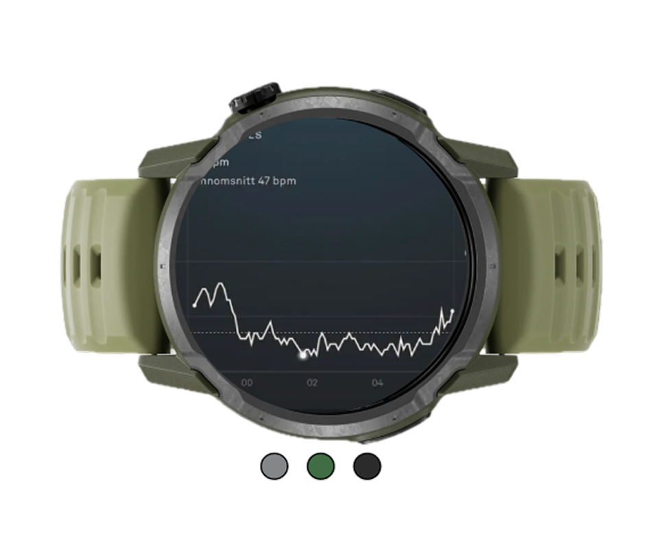
PULSE Core følger din puls, din restitution og din træning hele dagen, med 99% præcision undersøgt af forskere, så du ved, om det du gør, faktisk giver resultater.
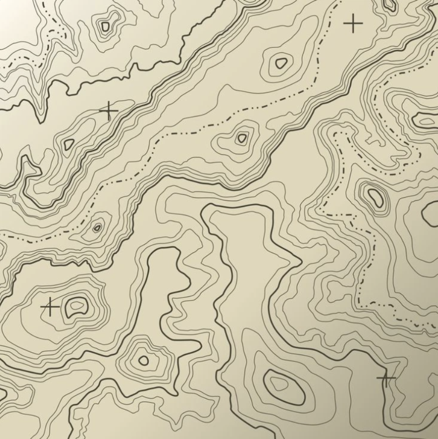
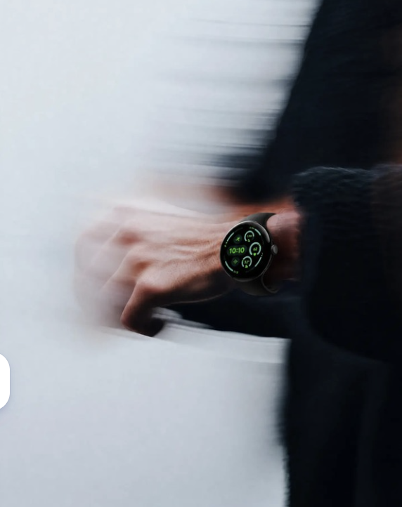
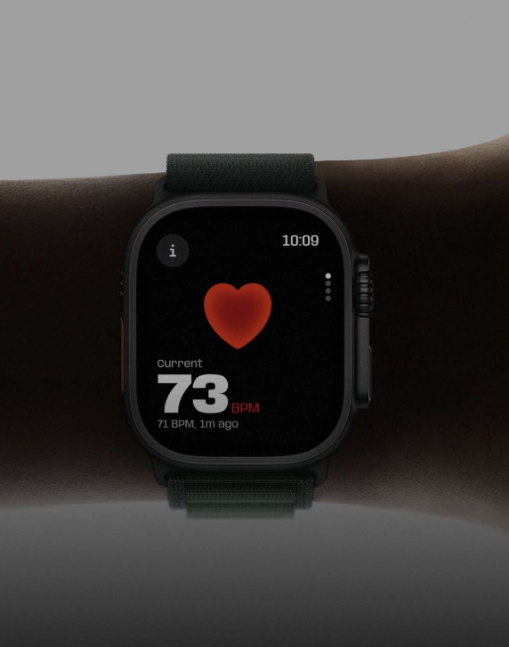
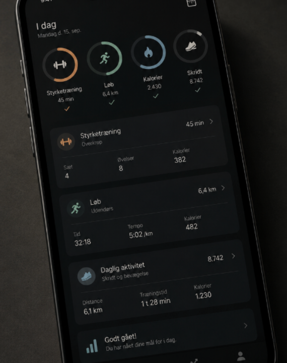
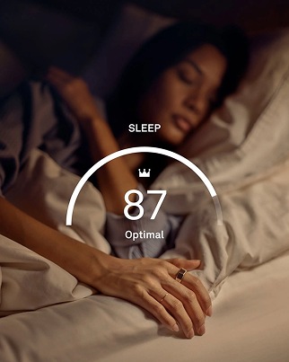
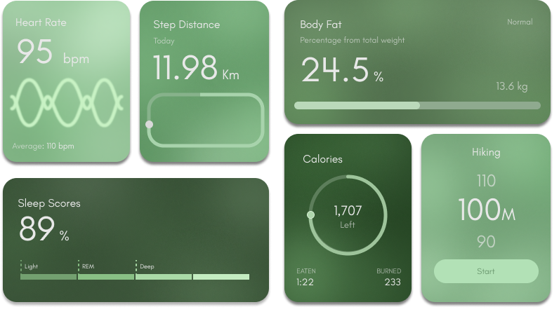
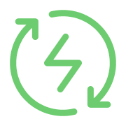
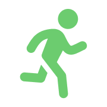
"Jeg har testet tre forskellige armbånd,
og PULSE Core er det første,hvor pulstallene
faktisk stemmer med mit brystbælte under
styrketræning."
"10 dages batteritid lyder som marketing,
men jeg oplader det faktisk kun én gang
om ugen. Det er det, der får mig til
at bære det hver dag."
"Det ser ikke ud som et 'fitness-ur'
jeg går med det til forelæsning
uden at tænke over det. Appen viser
lige det, jeg har brug for,
uden 40 menuer."
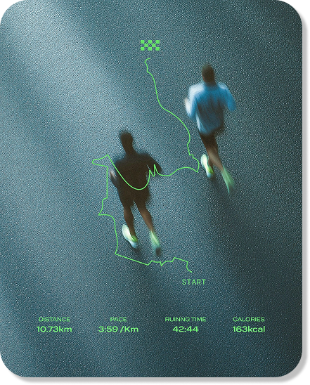
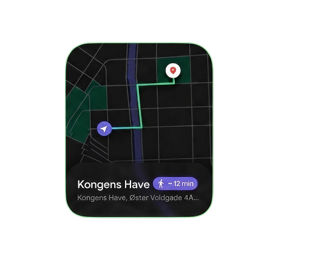
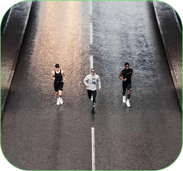
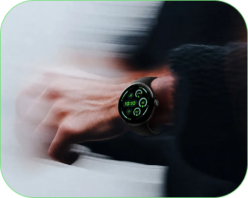
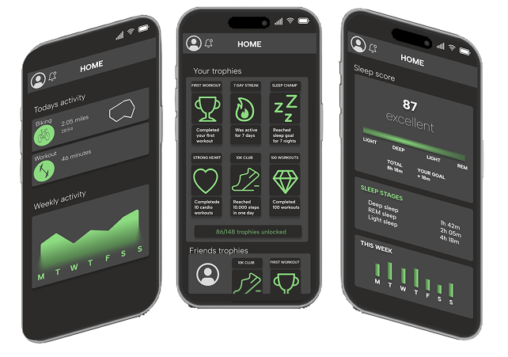
Præcis pulsmåling, søvn- og restitutionsdata og automatisk aktivitetsregistrering, samlet i ét armbånd du kan bære hele dagen.
Fri fragt · 2 års reklamationsret